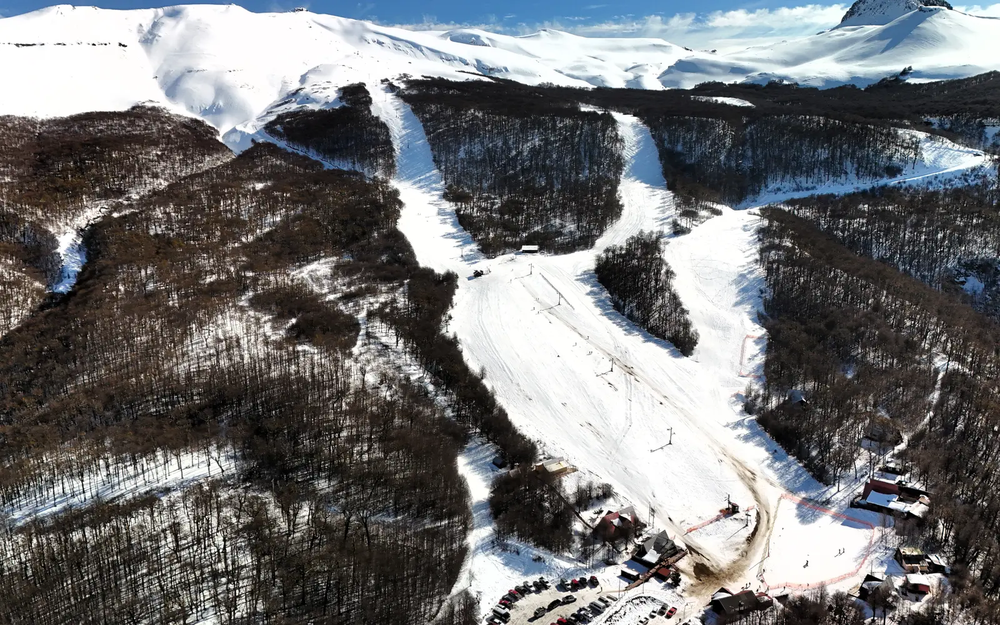
Mountain Living
Ski, senderos, bosque y nieve como parte de la vida cotidiana.
Terrazas del Fraile reúne naturaleza, vida outdoor y conexión con Coyhaique en un territorio para vivir, vacacionar o invertir.
Terrazas del Fraile fue concebido para vivir, vacacionar o invertir en uno de los sectores con mayor proyección de la Patagonia.



Ski, senderos, bosque y nieve como parte de la vida cotidiana.
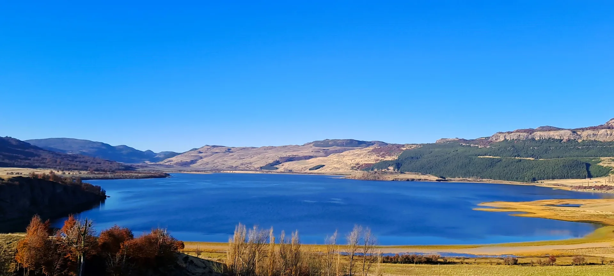
Un entorno conectado con Lago Frío y la proyección de una futura área recreativa junto al agua.
Un paisaje que cambia con las estaciones y permite imaginar una forma distinta de habitar la Patagonia.
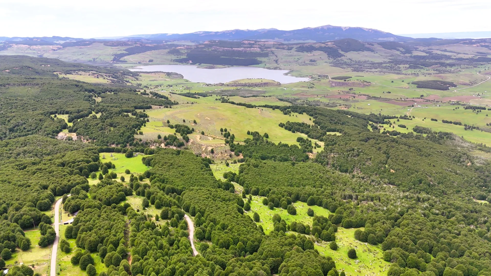
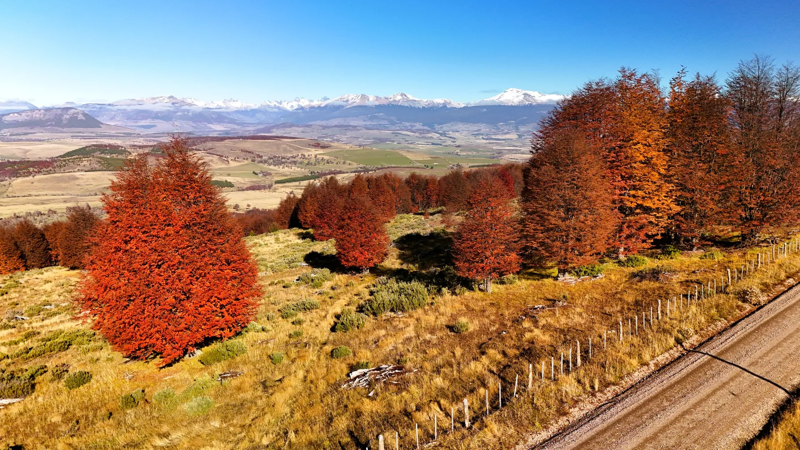
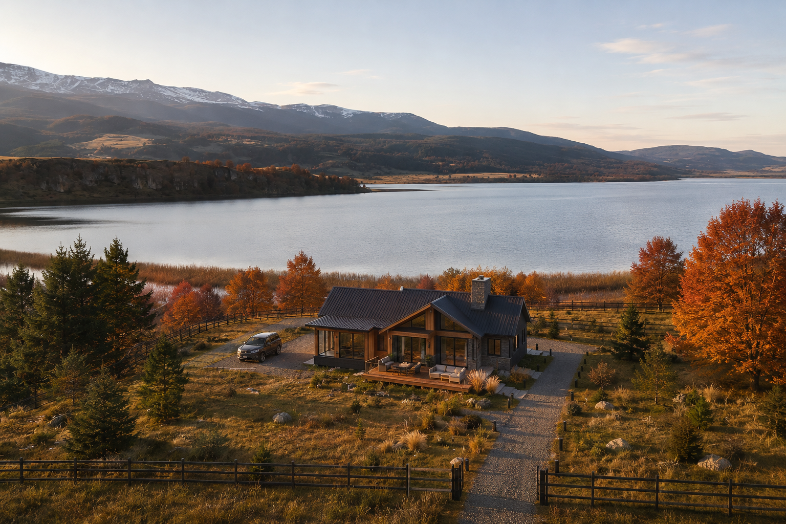
Una propuesta de área recreativa y marina que proyecta la relación del proyecto con el lago y la vida al aire libre.
Imagen referencial de propuesta.
Conocer Lago Frío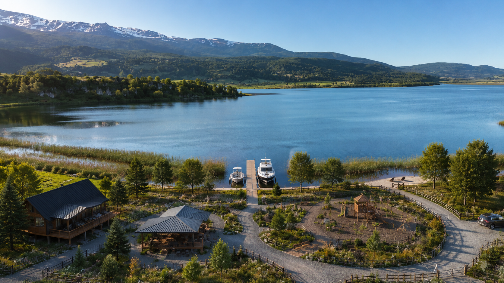
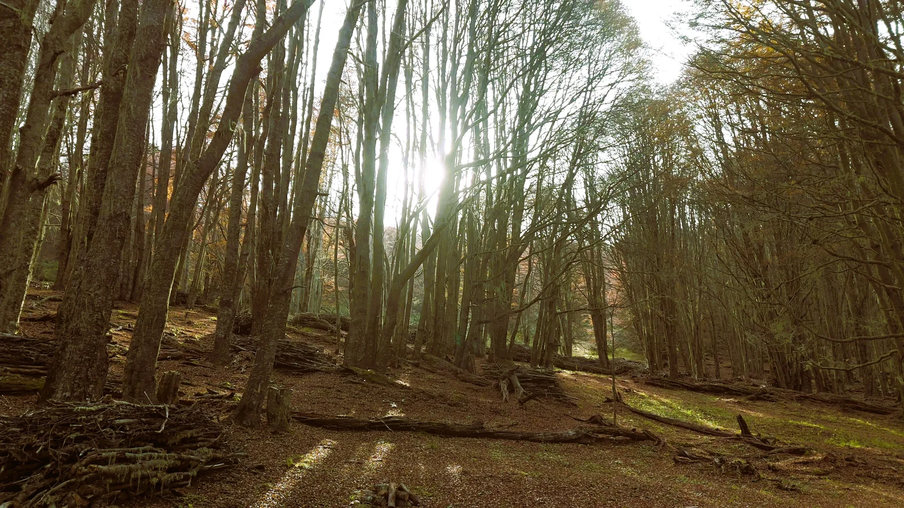
Un entorno de vegetación nativa que invita a caminar, detenerse y vivir el territorio a otro ritmo.
Explorar el bosqueEl mismo territorio se transforma durante el año y abre nuevas maneras de disfrutarlo.
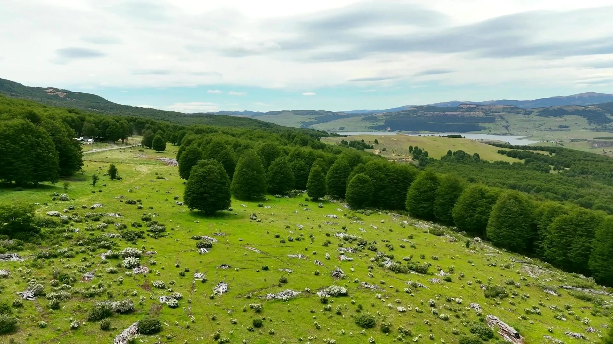
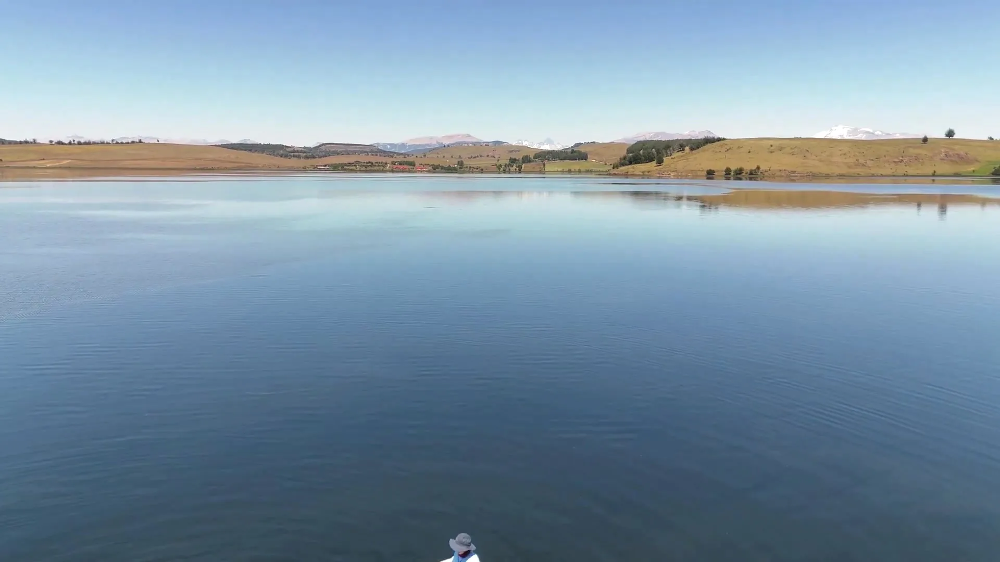
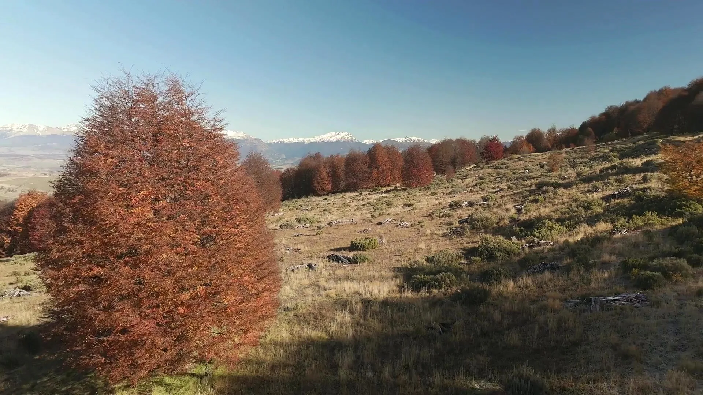
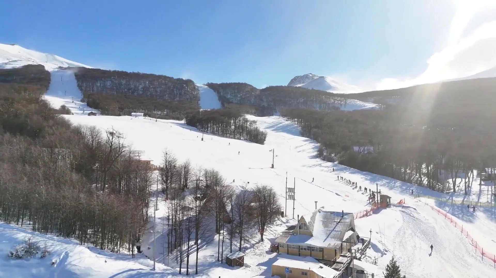
Las parcelas N.º 1, N.º 7 y N.º 10 se encuentran reservadas.
Actualmente el proyecto se encuentra en proceso de subdivisión ante el SAG. Comprar en esta etapa permite acceder a precios preferenciales antes de finalizar su desarrollo.
Precio lista: $35.900.000
Beneficio: $5.000.000
Sujeto a evaluación y condiciones de la institución financiera.
Solicitar informaciónUn entorno natural privilegiado, conectado con la ciudad, la montaña y Lago Frío.
Déjanos tus datos y coordinaremos una visita para que conozcas el proyecto y su entorno.